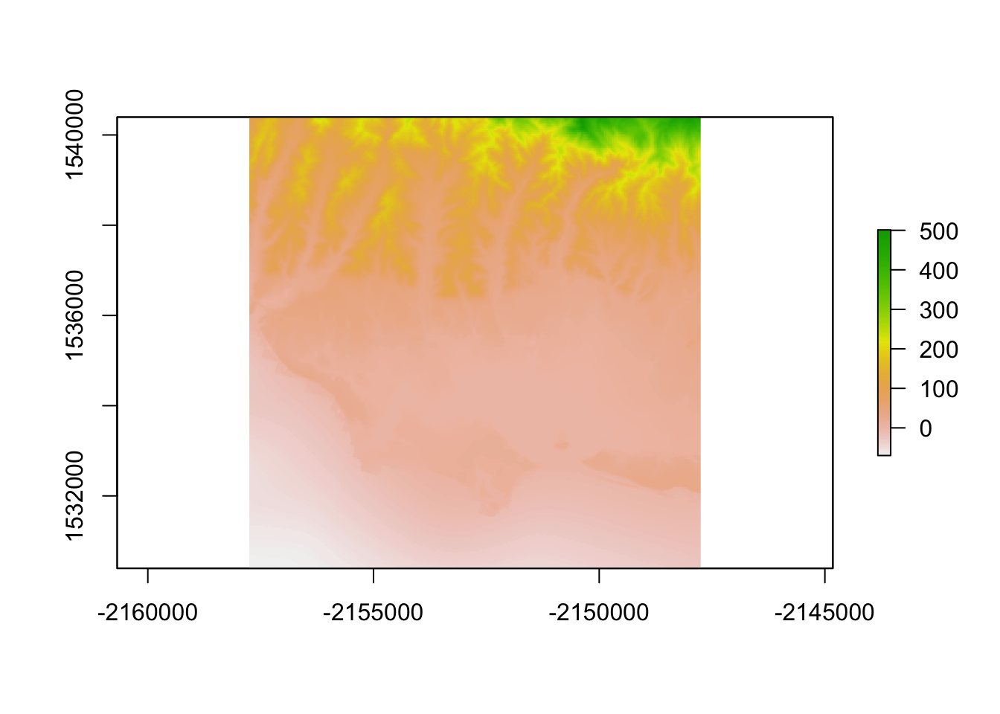
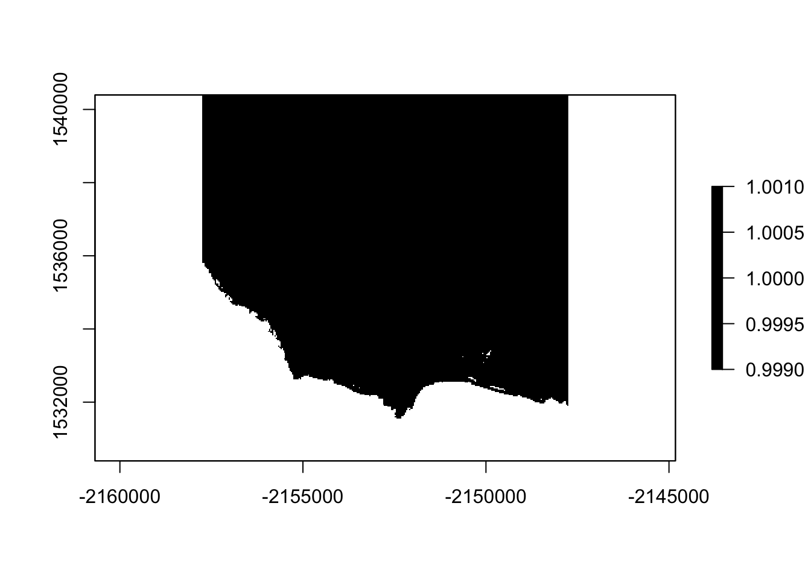
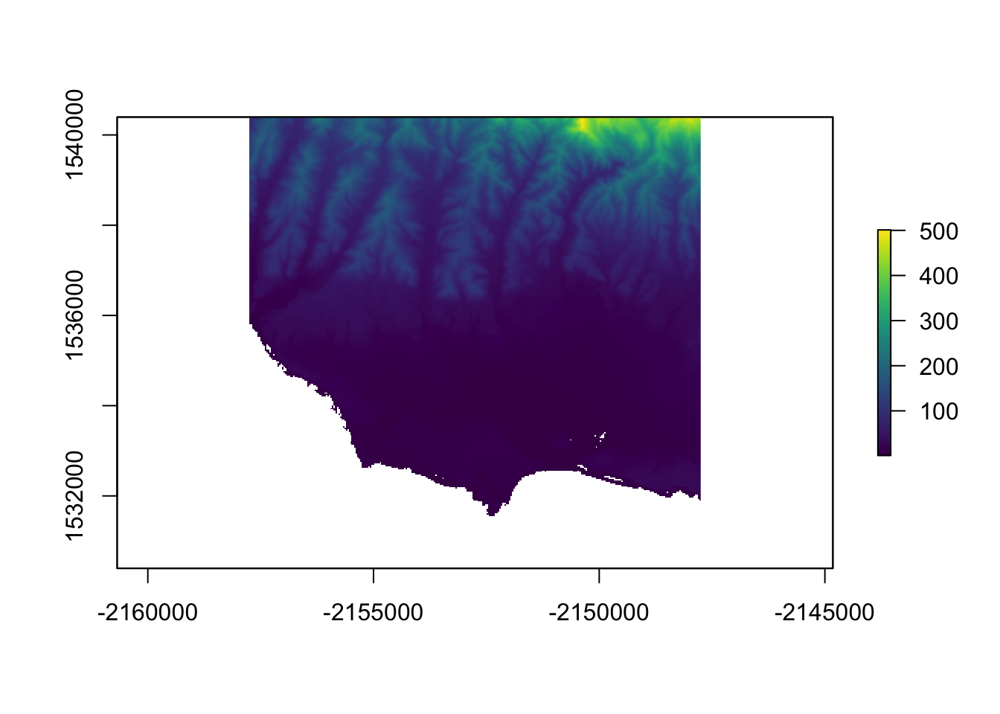
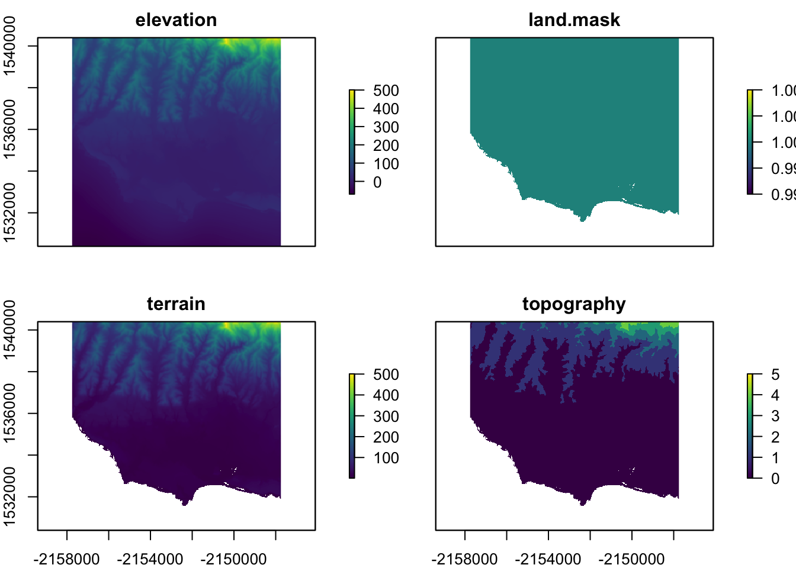

library(tidyverse)
library(sf)
library(raster)
library(elevatr)
library(osmdata)
library(leaflet)bb = read_csv("/Users/xingxin/Github/geog176a-summer-2020-lab1/uscities.csv") %>%
st_as_sf(coords = c("lng", "lat"), crs = 4326) %>%
filter(city == "Goleta") %>%
st_transform(5070) %>%
st_buffer(5000)
st_bbox(bb) %>%
st_as_sfc() %>%
st_as_sf()## Simple feature collection with 1 feature and 0 fields
## geometry type: POLYGON
## dimension: XY
## bbox: xmin: -2157749 ymin: 1530385 xmax: -2147749 ymax: 1540385
## projected CRS: NAD83 / Conus Albers
## x
## 1 POLYGON ((-2157749 1530385,...elev = get_elev_raster(bb, z = 11) %>%
crop(bb)
plot(elev)
writeRaster(elev, filename = "/Users/xingxin/Github/geog176a-summer-2020-lab1/goletaelev.tif", overwrite = TRUE)r = raster("/Users/xingxin/Github/geog176a-summer-2020-lab1/goletaelev.tif")
threshold = function(x) {ifelse(x <= 0 , NA, 1)}
threshold(-100)## [1] NAm = calc(r, threshold)
plot(r)plot(m, col = "black")
ocean_cut = m * r
plot(ocean_cut, col = viridis::viridis(256))
rcl = data.frame(min = seq(0,500,100),max = seq(100,600, 100), lab = c(0:5))
rc = reclassify(ocean_cut, rcl, lowerTRUE = TRUE)
s = stack(r, m, ocean_cut, rc) %>%
setNames(c("elevation", "land-mask", "terrain", "topography"))
plot(s, col = viridis::viridis(256))
addr = elev %>%
st_bbox(s) %>%
st_as_sfc() %>%
st_transform(4326)
osm = osmdata::opq(addr) %>%
add_osm_feature(key = 'amenity', value = "restaurant") %>%
osmdata_sf()
resta = osm$osm_point %>%
dplyr::select(osm_id, name, amenity) %>%
filter(!is.na(name))
leaf = resta %>%
st_transform(crs(s)) %>%
st_intersection(st_as_sfc(st_bbox(elev))) %>%
mutate(elev = raster::extract(elev, resta))
leaflet() %>%
addTiles() %>%
addMarkers(data = resta, label = ~name, popup = leaf)